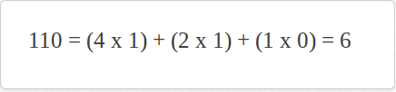
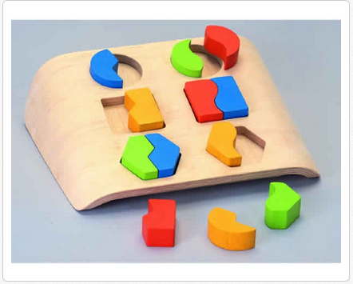
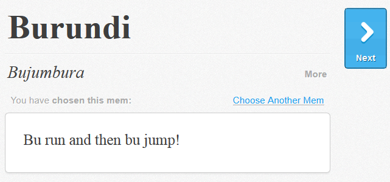

- Both the product and the company is called Memrise
- Source code available on https://github.com/Memrise
- Web, Android and iOS devices
- Target audience
Techniques
- Mnemonics
- Flashcards
- Spacing
Mnemonics
Associating a picture, word or sound with a concept can assist with remembering it. Called a mem.


Flashcard
All necessary information is encoded on a flashcard that is shown at key points.

Spacing
People memorise items better if they are studied a few times over a long time.
Learning theories
Behaviourism
- Repetition
- Small progressive tasks
Learning theories
Cognitivism
- Associate new concepts with known concepts (mnemonics)
- Pace controlled by learner
Learning styles
VARK
- Visual
- Read/write
- Some auditory
Information
- http://www.memrise.com/about/
- http://en.wikipedia.org/wiki/Memrise